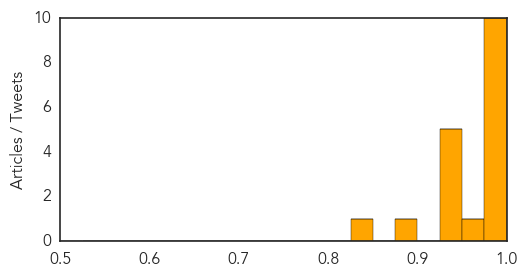
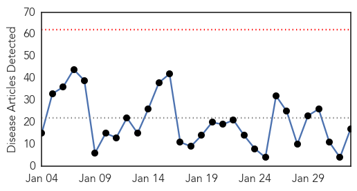
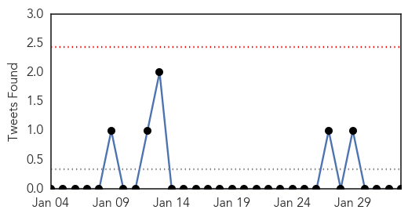
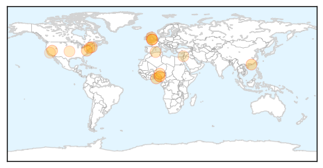
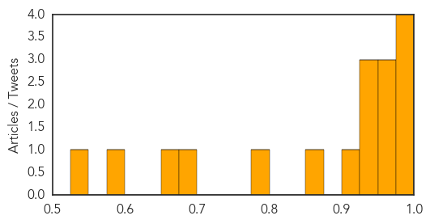

Swine Flu
30-Day Web Trend
9 alerts, 5 warnings

30-Day Twitter Trend
0 alerts, 0 warnings

Article Locations

Article Confidences
Top Articles:
- 1.000
- Gujarat Records Another Swine Flu Death, 39 Fresh Cases in a Single Day; First H1N1 Death in Odisha
- 0.999
- After ex-CM, Rajasthan's home minister hit by swine flu
- 0.999
- 191 swine flu deaths took place in India in January 2015: Govt
- 0.999
- No let up in swine flu surge in Telangana
- 0.998
- 1 more suspected swine flu death reported, 3 admitted on Sunday
- 0.996
- Breathalyser Tests Despite Flu Scare
- 0.996
- Rajasthan home minister, AP MP down with swine flu
- 0.993
- Five more test positive for swine flu
- 0.991
- 10 More Die of Swine Flu in Rajasthan
- 0.991
- Mohali records first swine flu death
- 0.972
- Med Teams land in Sampatti After 20 Fall Ill in Single Day
- 0.949
- Telangana: Swine Flu Claims 31 Lives in a Month
- 0.943
- Swine flu death toll hits 42 in Gujarat in January
- 0.936
- Gurgaon school children to get swine flu prevention lessons at assembly
- 0.932
- ‘No need to panic on swine flu’
- 0.926
- Democrats Redeemed? Republicans More Anti-Vaccine, Says Paper
- 0.886
- Confidence In Government Linked To Willingness To Vaccinate
- 0.845
- Healthy initiative by students
Top Tweets:
-
No tweets found for Feb 02, 2015
Influenza
30-Day Web Trend
0 alerts, 0 warnings

30-Day Twitter Trend
0 alerts, 0 warnings

Article Locations
Article Confidences
Top Articles:
- 0.998
- Three people tested for bird flu as slaughter begins on Hampshire chicken farm
- 0.994
- Forecasting the flu: researchers look for ways to let doctors, hospitals know what lies ahead
- 0.990
- You think the flu is bad? Maybe it’s worse than you think.
- 0.989
- Avian Influenza Case in British Columbia
- 0.964
- After Gehlot, Home Minister tests positive
- 0.961
- New biologic approach may protect against any influenza strain
- 0.959
- PhysicianOne Urgent Care Offers Convenient Flu Care
- 0.942
- Nigeria says bird flu outbreak under control
- 0.935
- Don't Panic, Bird Flu Is Under Control - Minister
- 0.932
- Authorities act as avian flu confirmed in Hampshire chickens
- 0.911
- Officials : Nation : Christianity Daily
- 0.869
- Minister Confirms Bird Flu Outbreak In 11 States
- 0.781
- There is neither bird flu nor swine flu in Algeria (Minister)
- 0.687
- Avian flu findings reported in 6 far-flung nations
- 0.666
- Lawmakers to Probe Flu Vaccine Production Process
- 0.578
- Tamiflu Is Effective In Shortening Flu Symptoms
- 0.535
- JOHESU Suspends Two-month-old Strike, Workers to Resume Tuesday, Articles
Top Tweets:
-
No tweets found for Feb 02, 2015